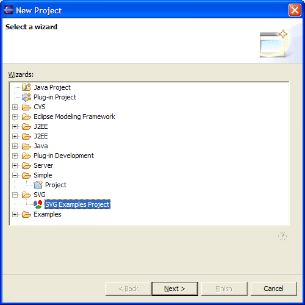
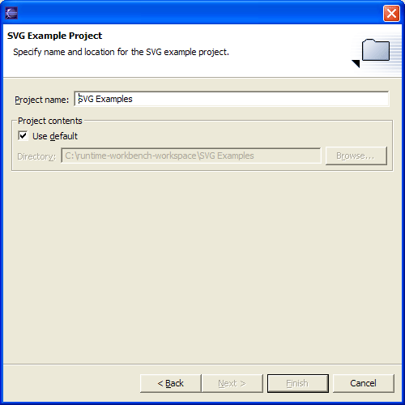

Example SVG Files
The Batik UI Plugin includes the example files which ship with the original Batik
distribution. A project wizard is included and can be used to create an example project
that contains all of these files. To use this wizard go to the menu item 'File / New / Other ...'. The
'New Project' wizard will be shown. Select 'SVG / SVG Examples Project'.

The next wizard page will prompt your for a project name and location. You can use these
default settings or change them according to your own preferences. Hit the 'Finish' button
to start the project creation and SVG file import. The project is rather large and a progress
bar will inform you about the import progress.
